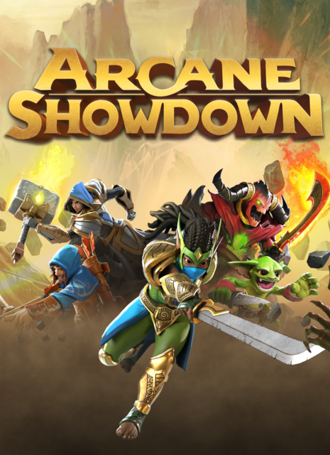

Notable Projects

Arcane Showdown – Relaunch Campaign
Led the production team to help the relaunch of Arcane Showdown. Collaborated with cross-functional teams to rework engineering pipelines and ensure stable backend performance for PvP gameplay. Key initiatives included:
- Game server stability optimization
- Backend implementation to iron out previous gameplay issues
- Cross-studio coordination with Big Huge Games

Riot Games – Feature Production & Tools
Worked as a Technical Producer to build scalable internal tools and features for Riot's highest revenue-generating product line. Supported product research and creative solutions for ongoing live updates. Highlights include:
- Contributed to features generating $100M+ annually
- Partnered with engineering and UX teams
- Conceptualized and implemented game-enhancing tools